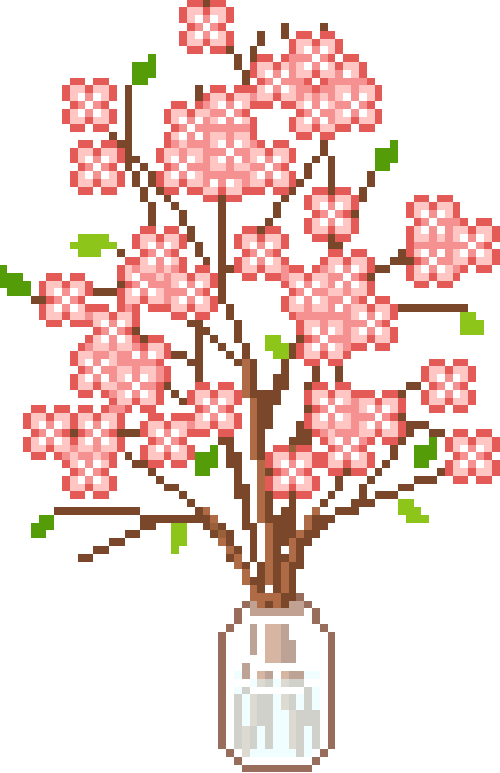
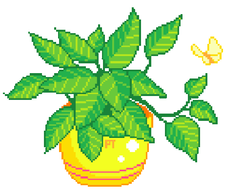
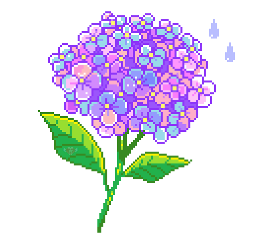
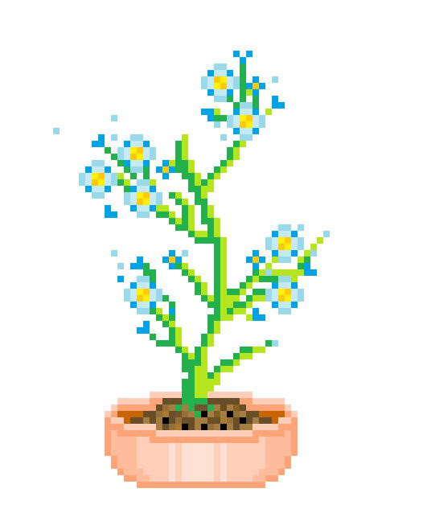
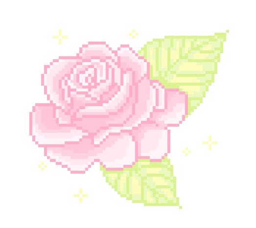
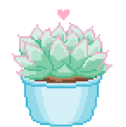
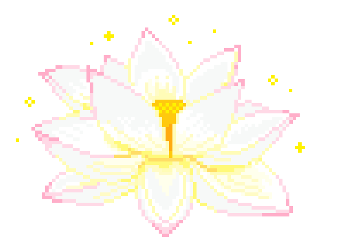

-
Cerejeira #001
- Plantae
- Rosales
As flores de cerejeira são flores originárias da Ásia, sendo encontradas principalmente no Japão. Também conhecida como cerejeira japonesa ou sakura, sua floração marca a chegada da primavera, um evento celebrado por boa parte das famílias, que se reúnem para apreciar a beleza de suas cores.
-
Singônio #002
- Plantae
- Cornales
A hortênsia é a flor símbolo do município de Gramado, conhecida cidade da serra gaúcha. É um arbusto muito florífero e rústico. Produz inflorescências em forma de buquês, compostas de muitas flores, que podem ter a cor azul, lilás, rósea, vermelha e branca conforme a variedade e o pH do substrato. Solos mais ácidos produzem flores mais azuis, enquanto que os mais alcalinos resultam em flores mais róseas.
-
Hortênsia #003
- Plantae
- Cornales
A hortênsia é a flor símbolo do município de Gramado, conhecida cidade da serra gaúcha. É um arbusto muito florífero e rústico. Produz inflorescências em forma de buquês, compostas de muitas flores, que podem ter a cor azul, lilás, rósea, vermelha e branca conforme a variedade e o pH do substrato. Solos mais ácidos produzem flores mais azuis, enquanto que os mais alcalinos resultam em flores mais róseas.
-
Jibóia #004

- Plantae
- Alismatales
A jibóia é uma planta bastante vistosa que tem a habilidade de se apoiar em diversos substratos. Muito comercializada em vasos sobre blocos de substrato, esta planta pode ser uma boa pedida para decorar interiores. Suas folhas são brilhantes e se alteram de acordo com a maturidade da planta, inicialmente são pequenas, sem variegações ou recortes, com o crescimento tornam-se grandes, variegadas e algumas vezes recortadas.
-
Margarida #005
- Plantae
- Asterales
A margarida é uma das plantas mais conhecidas, singela porém vistosa, lembra a simplicidade do campo. Suas flores são pequenas, reunidas em capítulos grandes, que podem ser simples ou dobrados, com pétalas brancas e centro amarelo. A folhagem é macia e verde escura, e evidencia, pelo contraste, as flores sustentadas por longos pedúnculos.
-
Myosotis #006
- Plantae
- Boraginales
Habitualmente é usada em maciços, como bordadura ao longo de caminhos e também em vasos, como forração com outras plantas. As flores com cinco pétalas, tem uma tonalidade azul-celeste nas pétalas e branco amarelado no centro delas e são muito atrativas para abelhas, beija-flores e borboletas.
-
Rosa #007
- Plantae
- Rosales
A rosa é a principal flor de corte comercial no mundo. Musa inspiradora de todas as artes, desde a pintura até a poesia, a rosa possui muitos significados em nossa cultura. Arbustiva e muito exigente em fertilidade e manejo a roseira aprecia o clima ameno. Além de flor de corte pode ser cultivada em vasos, isolada ou em grupos no jardim, formando charmosos maciços.
-
Suculenta #008
- nenhum específico
- nenhuma específica
Suculentas são plantas que acumulam água em um ou mais de um dos seus tecidos e fazem isso por serem nativas de regiões secas, assim, mantêm uma reserva para os períodos sem chuva. Esse armazenamento.
-
Tumbérgia Azul #009

- Plantae
- Lamiales
A tumbérgia-azul é uma trepadeira muito rústica e ornamental. Ela apresenta flores grandes de coloração azul com o centro branco, que aparecem o ano todo, mas com mais intensidade na primavera e no verão.
-
Vitória Régia #010
- Plantae
- Nymphaeales
A vitória-régia é uma planta aquática. Tem uma grande folha circular, verde-escura, com uma dobra em toda a borda, o que a faz lembrar a forma de uma bandeja rasa.A vitória-régia também tem flores, que se apresentam grandes e são muito perfumadas, além de lindas. As flores podem ser vistas durante o Verão, porém, duram pouco, somente 48 horas. Surgem brancas e passam a róseas no segundo dia, devido a polinização.